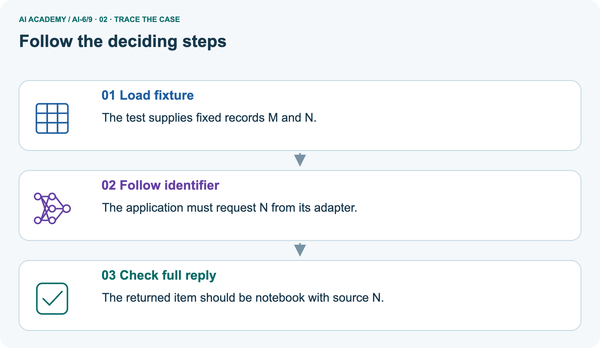
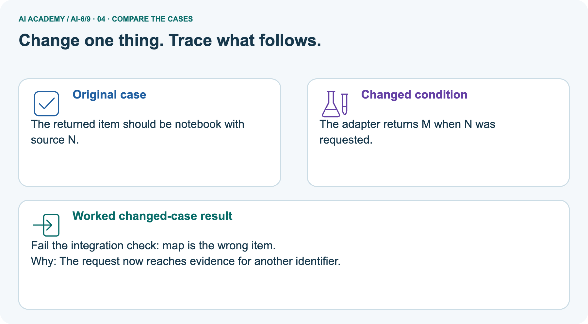
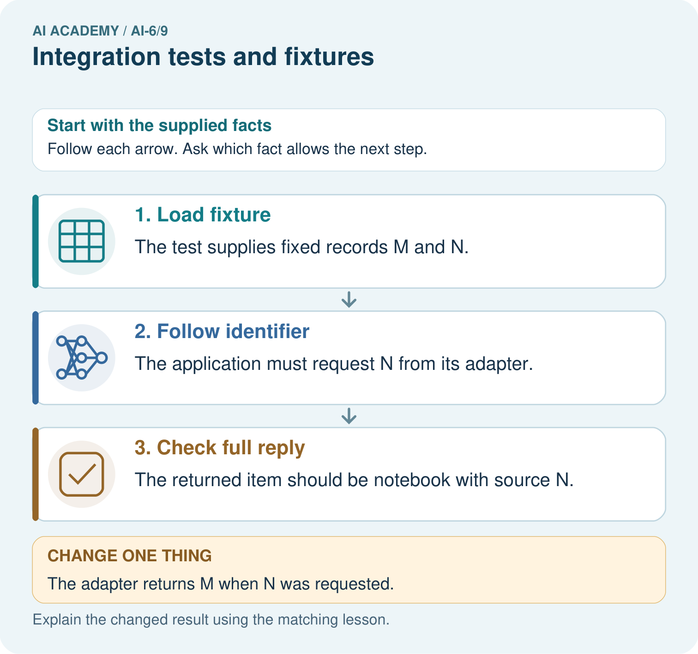
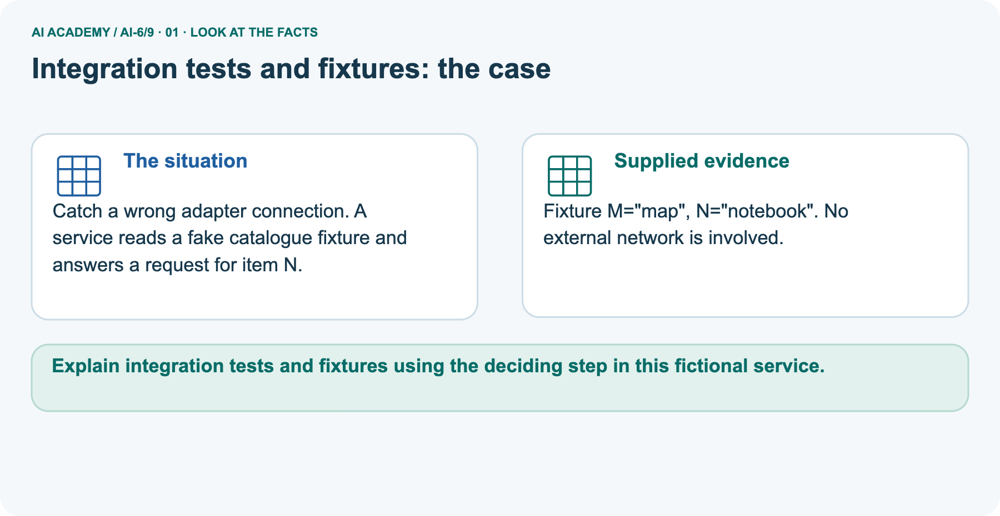
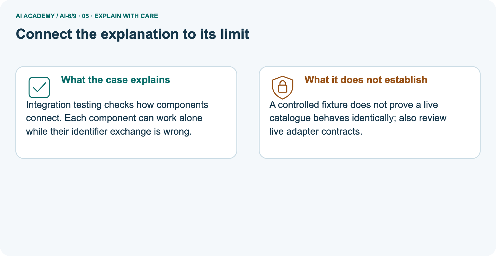
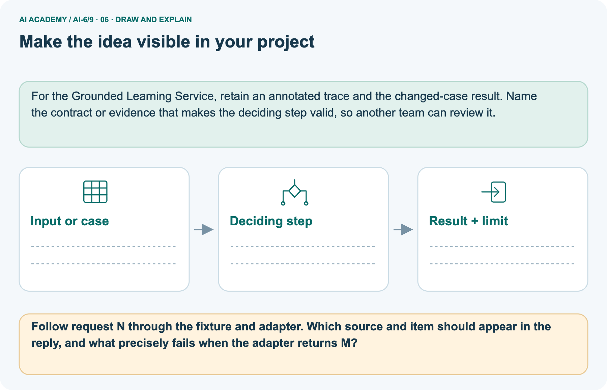

AI Academy · Level 6 · Grade 11 · Week 9 · Student lesson
Integration tests and fixtures
Learn to understand, design, build, test and explain AI systems responsibly.
Project: Grounded Learning Service
THE CONNECTED WEEK
Fix the fixture. Follow the calls. Check the whole interaction.
Test connected stages with controlled data, explicit failure paths and both result and adapter-call assertions.
Keep one habit: Fixture contract → correct/faulty trace table → catalogue picture → integration assertions → executable audit → independent missing-evidence failure.
Main lesson · Section 1
Test the connections as well as the final reply
A harmless-looking result can hide an incorrect internal call.
Learning goals
I can explain the mechanism and terminology of integration tests and fixtures.
I can apply the stated procedure to a new case with a traceable result.
I can identify an assumption or limitation and design a revealing follow-up.
Retrieve component tests and behaviour rubrics
Close your notes first. A rough first answer helps us choose the right starting point; it is not a score for your ability.
Without opening the old lesson, explain one key idea from Testing model-dependent behaviour. Give an example and a mistake that the idea helps you avoid.
Without opening the old lesson, explain one key idea from Least privilege and tool scopes. Give an example and a mistake that the idea helps you avoid.
Without opening the old lesson, explain one key idea from Typed contracts and schemas. Give an example and a mistake that the idea helps you avoid.
After trying, check the relevant lesson or ask your teacher. Change the part of your explanation that the evidence shows was wrong.
Prerequisite and starting response
Recall Testing model-dependent behaviour. Explain why a recorded result needs its input conditions and evidence source before it can support a claim.
End goal
Explain integration tests and fixtures using the deciding step in this fictional service.
Earlier wording, alternatives and picture transcripts
Your learning target
Remember before reading
This week you will practise:
Explain the mechanism and terminology of integration tests and fixtures
Apply the stated procedure to a new case with a traceable result
Identify an assumption or limitation and design a revealing follow-up
Retrieve what you already know
This week’s end goal
Main lesson · Section 2
Control the inputs and observe component interactions
A fixture makes the test scenario explicit; it does not simulate every real-provider condition.
Begin with the hidden-read example
Imagine checking whether a student request is denied access to a teacher folder. Looking only at the returned word “denied” is insufficient if the system already opened that folder. An integration test connects the request validator, permission check, storage adapter and response checks, then records both the result and the calls that occurred.
A fixture supplies controlled records or a chosen dependency outcome so the test can repeat it.
Define integration tests and fixtures
Integration tests exercise connected components and failure propagation. Fixtures supply controlled input records and mocked service outcomes.
Complete local records and observation contract
| Local fixture or contract | Supplied value |
|---|---|
| Access metadata | S is student-visible; T is teacher-only |
| Record S | source_id S, room_id B, capacity 12 |
| Record T | source_id T, room_id STAFF, capacity 4; fictional test data |
| Trusted main caller | student |
| Storage modes | Normal record, missing record, or explicit mock failure |
| Draft step | Deterministic copy stub; no model call |
| Expected denied interaction | No storage lookup of teacher record T |
| Observation | Final result + adapter lookup IDs + ordered component events |
Name supplied and missing evidence
Earlier wording, alternatives and picture transcripts
Begin by writing the question the procedure is intended to answer. Identify the information already supplied, the information it will produce and the information still missing.
These are constructed classroom examples; they do not require live accounts, private records or an external service. Do not treat a plausible explanation as a measured outcome.
Main lesson · Section 3
Compare the response and the call trace together
The first unauthorized read is already a failed boundary, even if the answer is later denied.
Original connected-stage and failure-propagation rule
Trace request validation, session permission, lookup and output validation together. Include absent sources and failing dependencies; verify that denied requests never invoke restricted lookup.
Complete good, faulty, missing and failing paths
| Version or controlled path | Final result | Recorded adapter calls | Interpretation |
|---|---|---|---|
| Correct order: student requests T | denied | [] | Permission check stops before restricted lookup |
| Deliberately broken order: same request | denied | [T] | Hidden boundary failure despite same final result |
| Allowed student S, normal storage | answered S/B/12 | [S] | Validation → authorize → lookup → draft stub → output check |
| Allowed S, missing record | review | [S] | No draft stub after absent evidence |
| Allowed S, mock dependency failure | review | [S] | No draft stub after dependency failure |
State the observation contract
Before applying the procedure, write its units, denominator or decision boundary where relevant. A partner should be able to repeat each step using the same inputs.
If a required input is absent or violates the stated contract, record that condition explicitly instead of quietly replacing it with a convenient value.
Explain the visual
Point to the input, the deciding step and the result in this week’s visual. Explain the same step in ordinary words. A picture helps when you can say what each part represents.
Earlier wording, alternatives and picture transcripts
Integration tests and fixtures — evidence trace
Connect the picture and the explanation
Main lesson · Section 4
Change the adapter behaviour and predict the observable failure
Keep the same request and fixture when isolating a connection error.
Current task and response
A student requests a teacher source; test response is denied, but a recorded lookup call read the teacher file. Show the intermediate steps and give the conclusion with its scope.
Predict the wrong-identifier picture
Change: The adapter returns M when N was requested.
Check after predicting
Prediction: Fail the integration check: map is the wrong item.
Reason: The request now reaches evidence for another identifier.
Earlier wording, alternatives and picture transcripts
Compare a familiar case with a changed case
Change one thing in the pictured case
Main lesson · Section 6
Follow the identifier across component boundaries
Working components can still be connected incorrectly.
Main hidden-read scenario and required repair
A student requests a teacher source; test response is denied, but a recorded lookup call read the teacher file.
The test exposes a hidden boundary failure despite the denied final response. Assert both response and call trace; deny before lookup.
Keep the reasoning’s scope
Compare the intermediate evidence with the final statement. Explain why each number or decision follows from the stated inputs.
The conclusion belongs to this scenario and procedure; changing the inputs, evaluation population or authority can change what it establishes. Retain the raw record so a later revision can be compared honestly.
Separate catalogue fixture and complete mapping
Catch a wrong adapter connection. A service reads a fake catalogue fixture and answers a request for item N.
Fixture M="map", N="notebook". No external network is involved.
The main case tests access ordering for fictional school sources. The picture is a separate catalogue: M means map and N means notebook. A request for N must reach the adapter as N and return source N with item notebook. If the adapter instead returns M/map, the identifier connection is wrong even though map is a valid fixture item.
The local checked reply returns review on that mismatch rather than publishing it as the requested answer. No live catalogue is consulted.
Trace request N through adapter to full reply



Read the picture one step at a time
Integration testing checks how components connect. Each component can work alone while their identifier exchange is wrong.
Predict M returned for requested N
Change one thing: The adapter returns M when N was requested. Predict the result before checking the explanation. What remains the same?
Check after predicting



Explain wrong-source evidence and fixture limits
A controlled fixture does not prove a live catalogue behaves identically; also review live adapter contracts.
Read the labelled picture: Follow request N through the fixture and adapter. Which source and item should appear in the reply, and what precisely fails when the adapter returns M?
Earlier wording, alternatives and picture transcripts
Learn from the worked case
Cover the result before checking it. Say what is given, choose the procedure, and follow one step at a time. Then uncover the result and explain your first mismatch. Ask why a step is allowed, not only what number it produces.
A pictorial worked case: Integration tests and fixtures
The facts we will use



Why this result follows
What this example does not establish
Main lesson · Section 7
Assert the calls that must not happen
Controlled mocks verify a declared interaction, not every live runtime condition.
Core fixture-versus-provider qualification
A mock verifies declared interactions, not real provider availability or all runtime limits.
A useful check asks what would make the reasoning fail. Distinguish a failure to execute the declared procedure from a weakness in the procedure itself.
The first may require a correction; the second requires an explicitly revised method and new evidence. Preserve unsuccessful cases so an improved result cannot hide the original problem.
Complete result-and-trace assertions
| Integration assertion | Why result-only checking is insufficient |
|---|---|
| Denied teacher-source request has empty adapter-call list | A final denial does not undo a prior restricted read |
| Allowed S reply includes correct ID, room and capacity | A valid-looking output can cite the wrong record or field |
| Missing/failing storage path has no draft-stub event | A dependency failure must not silently become invented evidence |
| Request N receives source N/notebook | M/map is valid data for the wrong identifier |
| Malformed request stops before lookup | Later output rejection cannot undo earlier unnecessary work |
| Preserve the deliberate faulty trace | Documents the regression the test should detect |
| Mock integration suite passes | Shows these declared interactions; live availability, timing and model variation remain unmeasured |
Guided explanation and repair
A report omits this qualification: A mock verifies declared interactions, not real provider availability or all runtime limits. Explain how omitting it could change a reader's interpretation, and write an accurate replacement.
Earlier wording, alternatives and picture transcripts
Locate the earliest unsupported step
Main lesson · Section 8
Practise tracing input, permission, adapter and result
Locate the earliest incorrect connection rather than only the final symptom.
Current explanation and guided scope check
Explain the weekly mechanism in your own words. Use the worked scenario to name its input, decision rule and output.
Supported W2 record
Use workbook W2 for the connected example “Integration tests and fixtures”. First fill the input and rule boxes. Try the middle steps before asking for a hint. After a hint, try the next step yourself.
| Plan | Do | Check |
|---|---|---|
| What is given? Which rule or procedure applies? | Record each intermediate step. | Does the result follow? What remains unknown? |
Explain your trace to a partner. Your partner points to one step to check. Swap roles on the next case. Each person writes their own explanation.
Individual mock-scope check
Use the worked case for Integration tests and fixtures. Proposed explanation: “The worked result establishes every future case”. Decide whether this explanation is supported.
Point to the step or supplied fact that decides; explain your repair if needed.
Answer on your own before discussion. If you are unsure, say which step you need help with.
Catalogue picture response
Follow request N through the fixture and adapter. Which source and item should appear in the reply, and what precisely fails when the adapter returns M?
Reserve independent not-found/fabrication scenario
This is supported practice. Keep the separately named independent case for an attempt before feedback.
Earlier wording, alternatives and picture transcripts
Practise with less help: Trace the worked case
Check your reasoning
Explain the picture
Main lesson · Section 9
Run the complete controlled integration audit
Inspect the full record: expected result, actual result, adapter calls and event order.
Current hidden-read investigation
A student requests a teacher source; test response is denied, but a recorded lookup call read the teacher file. Show the intermediate steps and give the conclusion with its scope.
Complete runnable fixtures and deliberate faulty order
"""Controlled integration fixtures and recorded adapter calls; no network."""
ACCESS={'S':'student','T':'teacher'}
DATA={'S':{'source_id':'S','room_id':'B','capacity':12},
'T':{'source_id':'T','room_id':'STAFF','capacity':4}}
def storage_fixture(mode='normal'):
calls=[]
def lookup(key):
calls.append(key)
if mode=='missing':return None
if mode=='failure':raise RuntimeError('mock dependency failed')
return dict(DATA[key])
return lookup,calls
def permitted(role,key):
return role in ('student','teacher') and key in ACCESS and (role=='teacher' or ACCESS[key]=='student')
def service(request,role,lookup,events):
events.append('validate_request')
if type(request) is not dict or set(request)!={'source_id'} or type(request['source_id']) is not str:
return {'status':'invalid_request'}
key=request['source_id']
events.append('authorize')
if not permitted(role,key):return {'status':'denied'}
events.append('lookup')
try:record=lookup(key)
except RuntimeError:return {'status':'review','reason':'dependency failure'}
if record is None:return {'status':'review','reason':'missing source'}
events.append('draft_stub')
output=dict(record) # local stub, not a model-generated answer
events.append('validate_response')
if (set(output)!={'source_id','room_id','capacity'} or output['source_id']!=key
or type(output['room_id']) is not str or not output['room_id']
or type(output['capacity']) is not int or output['capacity']<0):
return {'status':'review','reason':'response/source mismatch'}
return {'status':'answered',**output}
lookup,calls=storage_fixture();events=[]
denied=service({'source_id':'T'},'student',lookup,events)
assert denied=={'status':'denied'} and calls==[] and 'lookup' not in events
print('Correct denied result AND empty lookup trace:',denied,calls,events)
# Deliberate broken order: a final refusal does not undo earlier fixture access.
bad_lookup,bad_calls=storage_fixture()
def broken_order(request,role,lookup):
lookup(request['source_id'])
return {'status':'denied'} if not permitted(role,request['source_id']) else {'status':'unverified'}
bad=broken_order({'source_id':'T'},'student',bad_lookup)
assert bad==denied and bad_calls==['T']
print('Deliberate hidden failure detected: same denial but lookup calls:',bad_calls)
trials={}
for mode in ['normal','missing','failure']:
lookup,calls=storage_fixture(mode);events=[]
result=service({'source_id':'S'},'student',lookup,events)
trials[mode]=(result,calls,events)
print(mode,result,calls,events)
assert trials['normal'][0]=={'status':'answered','source_id':'S','room_id':'B','capacity':12}
assert all('draft_stub' not in trials[m][2] for m in ['missing','failure'])
# Separate pictured catalogue adapter and identifier agreement.
catalogue={'M':'map','N':'notebook'}
def catalogue_reply(requested,returned):
if returned!=requested:return {'status':'review','reason':'adapter identifier mismatch'}
return {'status':'answered','source_id':returned,'item':catalogue[returned]}
assert catalogue_reply('N','N')=={'status':'answered','source_id':'N','item':'notebook'}
assert catalogue_reply('N','M')['status']=='review'
print('Catalogue correct/wrong adapter:',catalogue_reply('N','N'),catalogue_reply('N','M'))
print('These mock interactions do not measure live provider availability, model behaviour or all runtime failures.')
Expected paths, preserved failures and limits
Predict the denied result and empty lookup trace before running or tracing the corrected service. Compare the deliberately broken-order version: it returns the same denial but records lookup T, so the interaction check catches it. Then trace allowed S under normal, missing and dependency-failure fixtures; only the normal path may reach the draft stub. Check the separate catalogue source-ID mismatch.
All records, storage and draft behaviour are local fixtures. The checks cover declared calls, schema fields and stopping paths, not real identity verification, network availability, performance or every possible provider failure. Keep the observed faulty trace when repairing a connection.
Evidence ledger and reflection
| Record | Your evidence |
|---|---|
| Given input and fixed rule | |
| Prediction before checking | |
| Actual result, or “not run” | |
| First mismatch and one explanation | |
| Boundary or missing input and expected response |
On paper, trace the supplied procedure. If code is provided, predict before running it in a local practice file. Never write an expected answer as though it were an observed run.
Before trying: what do I expect, and why? While trying: which step could first go wrong? Afterwards: what did I actually observe, and what should change? Keep “not run” if you only traced the procedure.
Earlier wording, alternatives and picture transcripts
Predict, investigate and preserve the evidence
Plan → try → check
Main lesson · Section 14
Try alone: locate a failure after storage reports not found
Explain the evidence path and output claim before opening feedback.
Complete independent connected-component scenario
Valid student lookup gets not-found from storage. Generator invents a capacity and final response appears supported. Locate failures.
First attempt and support record
Attempt this case before feedback. Record any help. Earlier examples below are further practice; a case already practised with feedback cannot establish fresh transfer.
Feedback after trying
Attempt the independent case before hints. Record whether you worked alone, used a hint or followed a model. After feedback, fix the first unsupported step and explain why it changed.
A later check uses a changed case, not a copied answer.
Earlier wording, alternatives and picture transcripts
Independent case: Apply a new case independently
Attempt this without hints
Valid student lookup gets not-found from storage. Generator invents a capacity and final response appears supported. Locate failures.
Record support used: none, hint or teacher explanation. After feedback, a different case is needed to demonstrate independence.
Use feedback to improve
Main lesson · Section 11
Save fixtures and interaction assertions with the service diagram
Retain both positive and negative paths, including a regression that previously failed.
Project task and artifact
Add a labelled integration tests and fixtures evidence sheet to Grounded Learning Service. Show how you can explain the mechanism and terminology of integration tests and fixtures.
Use the supplied fictional case and keep its inputs, intermediate steps, calculation or prediction, and limitation. Connect this record to last week’s record; a matching answer without a trace is insufficient.
| Project evidence | Record |
|---|---|
| Component and version | |
| Inputs permitted at prediction time | |
| Trace and comparison with earlier work | |
| Failure, limit and human review |
Actual run or trace and limitations
For the Grounded Learning Service, retain an annotated trace and the changed-case result. Name the contract or evidence that makes the deciding step valid, so another team can review it.
Earlier wording, alternatives and picture transcripts
Evidence for your project
Main lesson · Section 16
Finish with a response and an inspectable interaction trace
A passing final sentence cannot hide a forbidden internal call.
Retrieve and explain
Close your notes. Explain this goal in your own words: Explain the mechanism and terminology of integration tests and fixtures
Plan a changed-case return
If you are unsure, return to the worked picture and explain one arrow. If you are ready, change an input or assumption and justify your prediction.
Save your workbook evidence. At the next review, try a different case before opening your old answer.
Reference bank and extra practice
Choose the reference that helps your next step.
Reference · Use service vocabulary precisely
Reference · Section 5
Reference · Use service vocabulary precisely
Connect each term to an input, operation, evidence source or outcome.
Vocabulary and your explanation
| Word | Meaning |
|---|---|
| Integration test | A test of connected components |
| Fixture | Controlled data or behaviour supplied to a test |
| Call trace | A record of which operations occurred |
Extra challenge · Explain a stronger case
Reference · Section 10
Extra challenge · Explain a stronger case
Choose the next challenge after the main route.
Explain,repair and extend
Explain the weekly mechanism in your own words. Use the worked scenario to name its input, decision rule and output.
A report omits this qualification: A mock verifies declared interactions, not real provider availability or all runtime limits. Explain how omitting it could change a reader's interpretation, and write an accurate replacement.
For the worked scenario, propose one additional case that could reveal a failure, describe its expected outcome before running it, and explain what would need to remain fixed for a fair comparison.
Do not reuse W4 as a new final test after receiving feedback.
Explain → apply → challenge
Reference · Check the service reasoning and its limits
Reference · Section 12
Reference · Check the service reasoning and its limits
Use after practice; keep the selected independent case for its first attempt.
Current explanation and response
Complete the supported workbook tasks before attempting W4 independently. Record any hints or help used. After feedback, use the teacher's fresh retry rather than copying the earlier answer.
For a project, select a relevant new case, predict the outcome from the declared rule and preserve the result alongside any revision.
For the worked scenario, propose one additional case that could reveal a failure, describe its expected outcome before running it, and explain what would need to remain fixed for a fair comparison.
Do not reuse W4 as a new final test after receiving feedback.
Extra practice · Revisit the complete trace
Reference · Section 13
Extra practice · Revisit the complete trace
Predict before reading the supplied steps.
Complete trace and evidence
Complete evidence record
Integration tests and fixtures — evidence trace
Follow the input through the stated procedure to its result. Cover the result first, predict it, then explain every intermediate step. The text/table accompanies the figure so the example can be read without colour.
Reference · The earlier route checklist
Reference · Section 15
Reference · The earlier route checklist
Use one main route rather than repeating the lesson.
Targets,route and first prediction
Start with this question: Catch a wrong adapter connection. A service reads a fake catalogue fixture and answers a request for item N.
| By the end, I can | How I will show it |
|---|---|
| Explain the mechanism and terminology of integration tests and fixtures | Explain the deciding step, show a trace or test, and state one limit. |
| Apply the stated procedure to a new case with a traceable result | Explain the deciding step, show a trace or test, and state one limit. |
| Identify an assumption or limitation and design a revealing follow-up | Explain the deciding step, show a trace or test, and state one limit. |
Remember → watch and explain → try with help → investigate → try independently → keep project evidence. Your teacher may spread this lesson across several classes.
Keep your first prediction. Compare it with what the evidence shows and explain any change.
Extra practice · Predict,check and repair
Reference · Section 17
Extra practice · Predict,check and repair
Keep supported feedback separate from the independent case.
First supported question and optional hint
Catch a wrong adapter connection. A service reads a fake catalogue fixture and answers a request for item N.
Which labelled step matches this detail? The returned item should be notebook with source N.
1. Load fixture
2. Follow identifier
3. Check full reply
Hint if needed: Read the steps in the pictorial case. Match the supplied detail to the stage that performs or records it.
Practice 1: explain the deciding evidence
Check after the first attempt
After your attempt, compare with the supported explanation: Check full reply The returned item should be notebook with source N. Integration testing checks how components connect.
Each component can work alone while their identifier exchange is wrong.
Changed-case question and optional hint
Changed-case practice: The adapter returns M when N was requested. Which conclusion is supported by the supplied facts?
1. This one example guarantees correct results for every future input.
2. We can decide the result without examining the changed input or the procedure.
3. Fail the integration check: map is the wrong item.
Hint if needed: Use the changed condition and the deciding step in the pictorial trace. The answer must say what follows from those facts.
Practice 2: explain the deciding evidence
Check after the changed attempt
After your attempt, compare with the supported explanation: Fail the integration check: map is the wrong item. The request now reaches evidence for another identifier.
Repair and retain the record
Review Testing model-dependent behaviour (ai-6/8). Goal: Explain the mechanism and terminology of testing model-dependent behaviour.
Short practice: Score "Friday in room B" and "Friday in room D" against both mandatory criteria. Would a correct 25-word response pass, and why?. Return to this week and explain what you changed.
Review Least privilege and tool scopes (ai-6/6). Goal: Explain the mechanism and terminology of least privilege and tool scopes. Short practice: Classify read S2, write S2 and read S5 as permitted or denied.
Identify the operation or station mismatch for each denial, then reconsider after read S5 is added to trusted scope.. Return to this week and explain what you changed.
Review Typed contracts and schemas (ai-6/3). Goal: Explain the mechanism and terminology of typed contracts and schemas. Short practice: Compare A’s count 4 with B’s count "4".
Which record passes, which gate rejects B, and why does changing A’s count to -1 create a different failure?. Return to this week and explain what you changed.
Use Download completed work in the hosted lesson to export your answers, reflections, practice feedback and code-run evidence. Open the HTML copy to read or print it.
Drafts stay in this browser when storage is available; clear drafts on a shared device.
Earlier wording, alternatives and picture transcripts
Use this supported practice once, in the browser or on paper. Keep the reserved independent assessment for a separate first attempt before teacher feedback.
Repair a missing building block
Keep your completed work
Reference · Six-picture concept journey
Reference · Section 18
Reference · Six-picture concept journey
Choose the picture that supports the current explanation.
01. Integration tests and fixtures: the case



Catch a wrong adapter connection. A service reads a fake catalogue fixture and answers a request for item N. Supplied facts: Fixture M="map", N="notebook". No external network is involved.
Point to the given fact that matters most. Explain why it matters.
02. Follow the deciding steps
Load fixture: The test supplies fixed records M and N. → Follow identifier: The application must request N from its adapter. → Check full reply: The returned item should be notebook with source N.
Point to each numbered stage and explain which recorded input it uses.
03. Integration tests and fixtures — evidence trace


Integration tests and fixtures — evidence trace.
A student requests a teacher source; test response is denied, but a recorded lookup call read the teacher file. | Trace request validation, session permission, lookup and output validation together.
Include absent sources and failing dependencies; verify that denied requests never invoke restricted lookup. | The test exposes a hidden boundary failure despite the denied final response.
Assert both response and call trace; deny before lookup.
Read the labels and values. Explain the relationship the model shows.
04. Change one thing. Trace what follows.
Original case: The returned item should be notebook with source N. Changed condition: The adapter returns M when N was requested. Expected result: Fail the integration check: map is the wrong item.
Reason: The request now reaches evidence for another identifier.
Predict before checking the worked changed-case result. Name what changed and what the supplied facts allow you to conclude.
05. Connect the explanation to its limit



Integration testing checks how components connect. Each component can work alone while their identifier exchange is wrong.
Limit: A controlled fixture does not prove a live catalogue behaves identically; also review live adapter contracts.
Explain the case, then point to a limit on the claim.
06. Make the idea visible in your project



For the Grounded Learning Service, retain an annotated trace and the changed-case result. Name the contract or evidence that makes the deciding step valid, so another team can review it.
Draw your input, deciding step, result and limit. Supported question: Follow request N through the fixture and adapter. Which source and item should appear in the reply, and what precisely fails when the adapter returns M?
Draw your project trace and justify the deciding step using evidence.